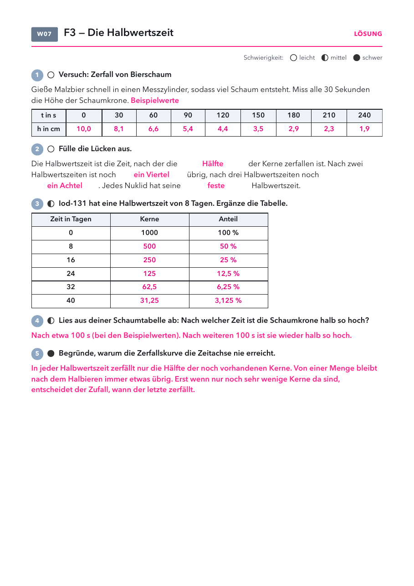

Klasse 10 · Physik · W07 (Woche ab 02.11.2026) · Leitfrage 3
| Material | Anzahl | Hinweis |
|---|---|---|
| nicht nötig | ||
| Material | Anzahl | Hinweis |
|---|---|---|
| Messzylinder 250 ml | 1× | |
| Malzbier | 1 Flasche | zimmerwarm |
| Lineal | 1× | |
| Stoppuhr | 1× | Handy genügt |

| Nuklid | Halbwertszeit | wo es vorkommt |
|---|---|---|
| Radon-220 | 56 Sekunden | entsteht in Gestein und Baustoffen |
| Iod-131 | 8 Tage | in der Medizin gegen Schilddrüsenkrankheiten |
| Cäsium-137 | 30 Jahre | noch heute in Pilzen und Wildschweinen aus Tschernobyl |
| Kohlenstoff-14 | 5730 Jahre | Altersbestimmung von Funden |
| Uran-238 | 4,5 Milliarden Jahre | etwa so alt wie die Erde, deshalb noch da |
| Beispiel | was passiert | Folge |
|---|---|---|
| Luftdruck | halbiert sich etwa alle 5,5 km Höhe | Auf dem Mount Everest ist es rund ein Drittel. |
| Koffein im Blut | halbiert sich in etwa 5 Stunden | Der Kaffee am Abend wirkt noch in der Nacht. |
| Bierschaum | fällt immer um die Hälfte in gleicher Zeit | unser Versuch mit Malzbier |
Fluor-20-Animation: 225 Kerne, Uhr, alle 2 s ein Messpunkt, danach Kurve mit Halbwertszeiten bei 11, 22 und 33 s. Dazu Halbwertszeit für sechs Nuklide und exponentielle Abnahme im Alltag.
Lösung: Schaum (Beispiel): 10,0 bis 1,9 cm, Halbierung nach etwa 100 s. Lücken: Hälfte, ein Viertel, ein Achtel, feste. Iod-131: 500, 250, 125, 62,5, 31,25 Kerne. Die Kurve halbiert immer nur und erreicht nie null.